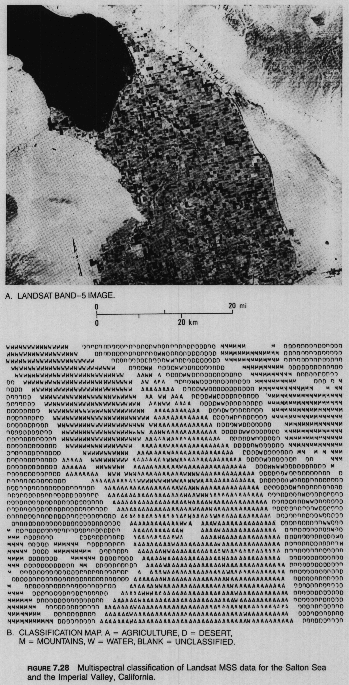
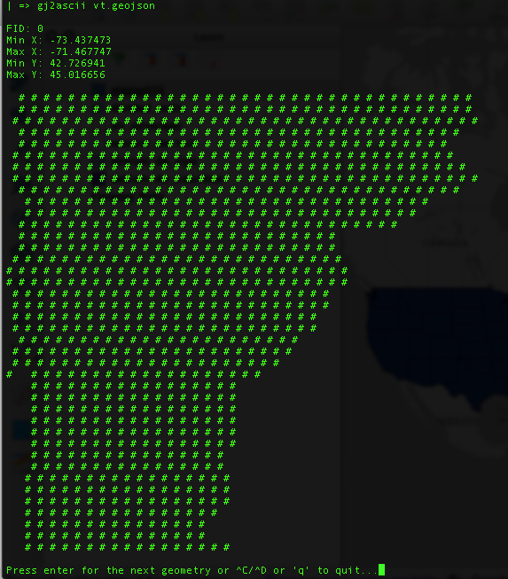
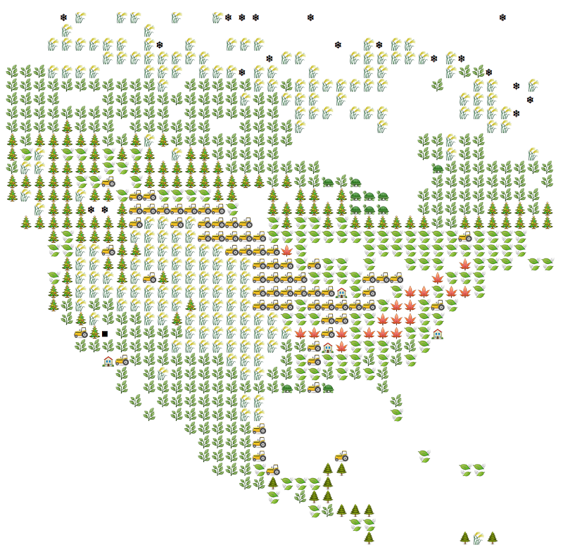
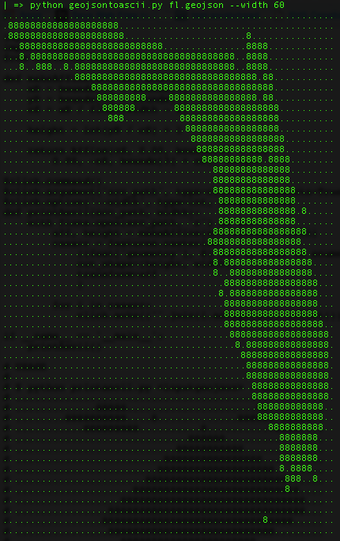

A throwback mapping technique at the modern console
My arcane problem
I’ve recently been spending a lot of time on Faraday’s remote servers, running one PostGIS operation after another in search of idealized geometries or custom market borders. In each case, I like to do a visual check to see that I haven’t created a node-sharing, topologically-laughable geo-monster before handing it off to another process on the same server.
My current workflow is to dump the geometry as geojson, grab the file to my local machine, and open it in QGIS or geojson.io — which is an extra minute at least for every look at a feature. I sometimes need to do this dozens of times an hour as I debug and optimize. Obviously this is complete crap, but there’s no easy way around it when the command line is the only window into the data.
The old ways

Multispectral classification of Landsat MSS data from the Salton Sea in California. From “Remote Sensing: Principles and Interpretation” by Floyd Sabins, 1978
From my remote sensing days at BU, I recalled my professors chuckling about how — in the dim ages before Arc/Info and most other raster processing systems — they would classify Landsat MSS data and then print out the results using ASCII characters in a grid. (After which they’d open beers with their teeth, calibrate their spectroradiometer lens with a hammer and toss the instrument into orbit with their bare hands. Those were the days).
So why not check to see if this sort of thing exists today? I floated a not-too-desperate-sounding trial balloon on twitter:
A utility to render geojson shapes in ascii from the command line.
— Map/ (@vtcraghead) March 10, 2015
And let me remind you all that the internet is indeed awesome, because . . .
Solutions
Three separate tools were thrown at me:
gj2ascii
Kevin Wurster wrote gs2ascii, a fully-formed python module that cycles well through multiple features:

Update — August 13, 2015: Kevin added emoji functions. Heaven help us.

geojsontoascii
Damon Burgett put together a streamlined script (also python — I blame Sean Gillies for this nonsense) to do the same:

geotype
And Morgan Herlocker cryptically teased something called “GeoType” that seems to do %$#&in’ colors at the command line:
:) @vtcraghead pic.twitter.com/fFsA7QKdEx
— Morgan Herlocker (@morganherlocker) March 11, 2015
. . . then upped the craziness:
@mattmoehr same thing from the command line with different font/spacing pic.twitter.com/gztYuEXNla
— Morgan Herlocker (@morganherlocker) March 11, 2015
I thank you all — this is exactly the sort of thing I was looking for.
Alternatives
My colleagues Tristan Davies and Nick Husher pointed out two other solutions to my original problem: Use the geojson.io API (if the geometry is simple enough), or POST to a gist using the github API. Then in both cases just visit the URL. Jake Wasserman built yet another python tool to make that easier.
But I’m a geohipster, and I prefer the cartographic equivalent of hand-milled artisanal mustache wax.